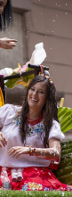
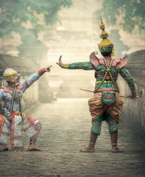

Galeria de fotos
-

Carnaval de máscaras em Veneza consolida uma tradição histórica.
-

As mascáras deram o tom em diversos carnavais pelo mundo.
-

Em Olinda a alegria foi muita.
mais fotos

& Vídeos
-


No Rio são as máscaras que deram o tom nesse carnaval de pandemia. Os foliões assumiram suas máscaras.
-

A seu modo, na China, o carnaval manteve a tradição
mais vídeos